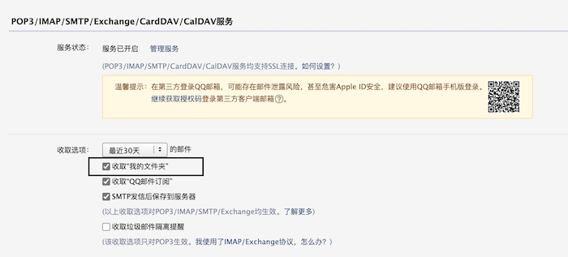

在 GNUS 中用 QQ 邮箱收取邮件列表
最近 Gnus 无法正常收取 outlook 邮件了，原因是 outlook 禁用 app password，强制使用 oauth2 认证来登陆邮箱。网上能找到一些方案，不过配置都比较麻烦还不跨平台。鉴于此，我也暂时放弃用 Gnus 中收取 outlook 邮件了。好消息是 QQ 邮件仍能正常使用。
最近我也同时对 Emacs 的开发感兴趣，想近距离看看这个古老的项目是如何进行项目管理和软件开发的。他们用的是一种古老的技术：邮件列表。所以我准备配置下 Gnus ，用 QQ 邮箱来读取 emacs-devel 邮件列表。
邮件列表里每天会有很多邮件，最好把其过滤到单独的文件夹中。在 QQ 邮箱中，这些过滤邮件文件夹都默认放在“我的文件夹”下，需要在 QQ 邮箱中打开“收取我的文件夹”这个开关，这样 Gnus 才能收取这些目录下的邮件。

然后是邮件过滤。目前有两种方案，一种是使用 Gnus 的 Client-Side IMAP Splitting，下面是一个完整的样例配置：
(setopt gnus-select-method '(nnimap "foxmail.cs" (nnimap-address "imap.qq.com") (nnimap-inbox "INBOX") (nnimap-split-fancy (| (any "emacs-devel@gnu.org" "emacs-devel") (any "help-gnu-emacs@gnu.org" "emacs-help") "INBOX"))))
这种方式有时候过滤不准确，而且也不通用。
另一种是直接设置 QQ 邮箱的收信规则，也是我打算使用的方式。这种方式配置简单直观，看着界面就知道怎么配置，同时也很通用。
最后，我的整个 Gnus 的 QQ 邮箱配置就一行：
(setopt gnus-select-method '(nnimap "foxmail.cs" (nnimap-address "imap.qq.com")))
是的，这样就行了。